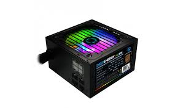

Componentes de una computadora:
¿Que es la fuente de alimentacion?
En electrónica, la fuente de alimentación o fuente de potencia es el dispositivo que convierte la corriente alterna (CA), en una o varias corrientes continuas (CC), que alimentan los distintos circuitos del aparato electrónico al que se conecta (computadora, televisor, impresora, router, etc.).1
En inglés se conoce como power supply unit (PSU), que literalmente traducido significa: unidad de fuente de alimentación, refiriéndose a la fuente de energía eléctrica.

¿Como se realiza la correcta instalacion?
1. Abrir el Gabinete o Chasis
Lo primero que hay que hacer es abrir la tapa del gabinete.
2. Extraer la Fuente de Alimentación
Segundo, se debe extraer la vieja fuente de alimentación quitando los 4 o 5 tornillos que la sujetan previamente desconectando todas las conexiones de la fuente.
3. Instalar la nueva Fuente de Poder
Insertar la nueva fuente y asegurarse de que los 4 o 5 tornillos estén bien colocados.
Después , cada extremo de la fuente de alimentación va hacia un componente de de la pc, algunos pueden quedar sin ser colocados. Si bien ya explicamos los conectores en la publicación Fuente de alimentación, no esta demás agregarlos al tutorial.